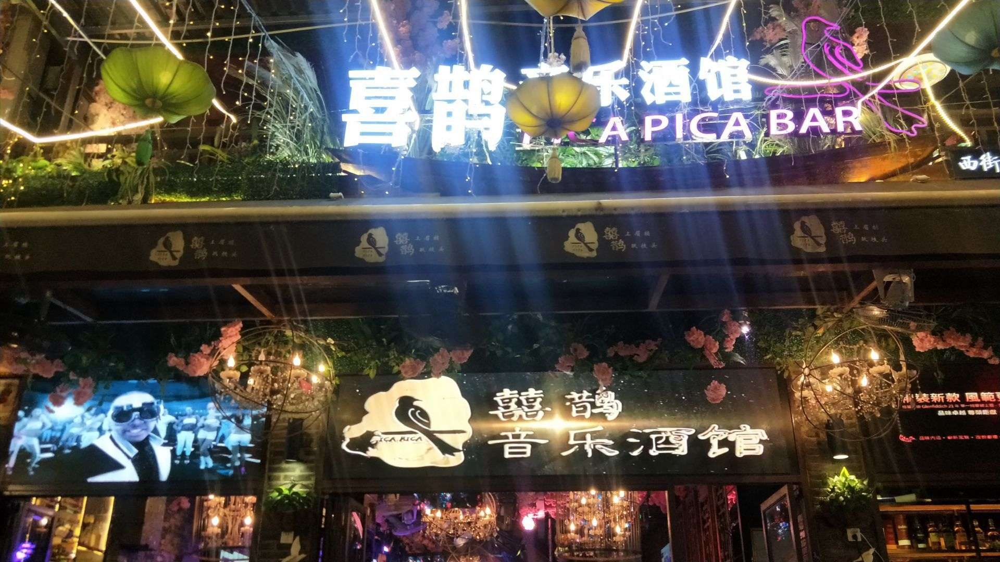

PICA PICA · YANGSHUO
当前设备未能启动 3D 画面。请使用支持 WebGL 的浏览器并启用硬件加速，再重新打开页面。
WEST STREET · LIVE MUSIC
循着霓虹与歌声，走进西街的夜。选一个座位，让音乐靠近一点。
可自由探索的 3D 空间
THE REAL PLACE
场景参考同店的门面、卡座和演出区资料。空间尺寸、部分遮挡区域及区域之间的连接采用合理推估；这里呈现的是可探索的概念重建。
MAKE YOURSELF AT HOME
点击下方的入口、卡座、舞台或吧台，镜头会沿通道平滑移动。可以随时切换位置或跳过过场。
拖动鼠标自由环顾，用 W A S D 或方向键行走，滚轮调整视野。点击场景里的小圆点了解细节。
单指滑动环顾，按住方向键行走，双指捏合调整视野。横屏也能体验。
选择「全景」，拖动旋转完整模型，滚轮或双指捏合缩放。切换屋顶显示，可查看室内布局。
可以切换「现场氛围」与「明亮参观」。系统开启减少动态效果时，镜头默认直接切换。